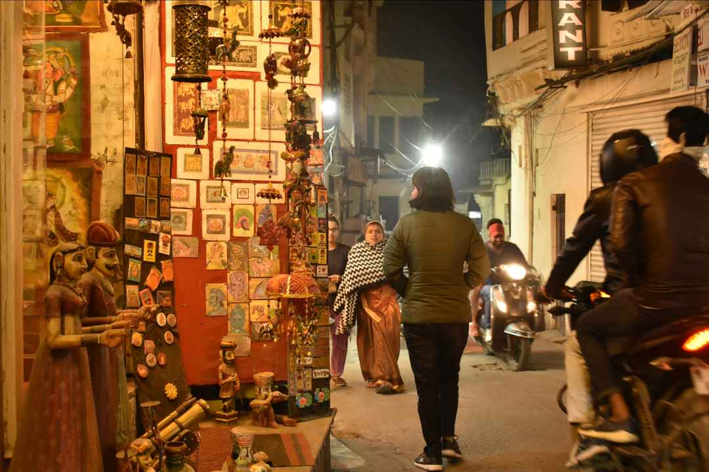
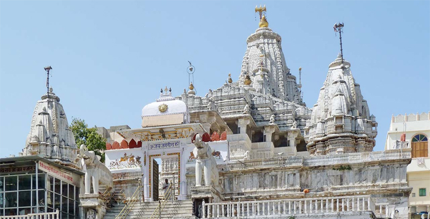
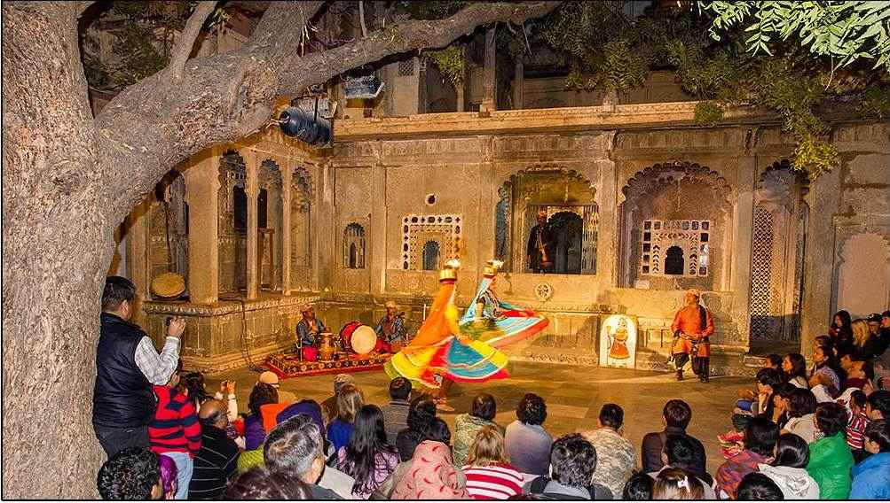

A Walking Guide to Udaipur's Historic Old City
While Udaipur is famous for its lakes and palaces, the city's true character reveals itself in the narrow lanes, bustling bazaars, hidden courtyards, and centuries-old havelis of its historic Old City.

Walking through the Old City is like stepping into a living museum. Around every corner, you'll find carved doorways, colorful balconies, family-run shops, street-side tea stalls, and glimpses of daily life that have remained remarkably unchanged for generations.
For first-time visitors, exploring the Old City on foot is one of the most rewarding things to do in Udaipur. Unlike large monuments where history is displayed behind glass, the Old City allows you to experience the heritage of Mewar as part of everyday life.
This walking guide takes you through some of the most fascinating streets, landmarks, and hidden gems in Udaipur's historic center.
Why Explore Udaipur's Old City on Foot?
The Old City was built long before cars became common. Its winding streets, stone pathways, and interconnected neighborhoods are best experienced at a slow pace.
Many of Udaipur's most important landmarks are located within walking distance of each other, making it ideal for self-guided exploration.
Discover hidden architectural details
Interact with local artisans
Visit lesser-known heritage sites
Photograph authentic street scenes
Experience local culture beyond major tourist attractions

Begin at City Palace
Start your walk at the magnificent City Palace. As the largest palace complex in Rajasthan, City Palace serves as both a historic landmark and an excellent introduction to the city's royal heritage. Even if you've already toured the palace, take a few moments to admire its impressive façade before beginning your walk through the surrounding streets.

Visit Jagdish Temple
Just outside City Palace stands Jagdish Temple, one of the city's most significant religious landmarks. Built in 1651, the temple showcases intricate stone carvings and remarkable craftsmanship. The broad staircase leading to the temple is often filled with locals, visitors, and street vendors, creating a lively atmosphere that reflects everyday life in the Old City.

Wander Through the Historic Lanes
After leaving Jagdish Temple, put away the map for a while and simply explore. This is where the true charm of Udaipur begins.
You'll encounter: Ornate wooden doors · Colorful murals · Traditional homes · Tiny shrines · Hidden courtyards · Historic havelis. Many buildings date back several centuries and continue to be occupied by local families. The architecture reflects a blend of practicality and artistry, designed to provide shade while showcasing intricate craftsmanship.

Discover Local Artisan Workshops
One of the highlights of walking through Udaipur's Old City is meeting the artisans who keep traditional crafts alive.
You may find workshops specializing in: Miniature paintings · Handcrafted jewelry · Leather goods · Textile work · Traditional artwork. Watching artists work by hand offers valuable insight into Rajasthan's cultural heritage. Many workshops welcome visitors and are happy to explain their techniques.
Take a Break at Gangaur Ghat
Soon you'll arrive at one of the most picturesque waterfront locations in Udaipur. Gangaur Ghat overlooks Lake Pichola and offers stunning views of the lake, surrounding hills, and historic architecture.
This area is particularly popular among: Photographers · Artists · Couples · Cultural travelers. The atmosphere changes throughout the day, making it worth visiting more than once.

Explore Bagore Ki Haveli
Located beside Gangaur Ghat, Bagore Ki Haveli provides a fascinating look into Rajasthan's royal lifestyle.
The haveli contains: Historic rooms · Traditional costumes · Royal artifacts · Cultural exhibits. If you're visiting in the evening, stay for the famous folk dance and cultural performance. It's one of the best cultural experiences in Udaipur.
Experience the Local Markets
No walking tour of Udaipur's Old City is complete without exploring its vibrant markets.
Even if you don't plan to shop, the markets provide a fascinating glimpse into daily life.

Discover Hidden Rooftop Views
One of the best-kept secrets of the Old City is its rooftop cafés.
Many offer spectacular views of: City Palace · Lake Pichola · Jag Mandir · Historic rooftops · The Aravalli Hills. A leisurely break here provides a welcome opportunity to slow down and absorb the city's atmosphere.
Best Time to Walk Through Udaipur's Old City
Avoid midday walks during summer months when temperatures can be high.
Early Morning · 7 AM – 10 AM
Cooler temperatures · Fewer crowds · Better photography
Late Afternoon · 4 PM – Sunset
Golden light · Vibrant street life · Comfortable weather
Practical Tips for Exploring the Old City
Wear Comfortable Footwear
The streets are uneven in places and involve occasional stairs.
Carry Water
Particularly during warmer months.
Allow Time to Wander
The most memorable experiences often happen away from planned routes.
Respect Local Customs
Many temples and religious sites require modest clothing.
Bring a Camera
The Old City offers some of the most photogenic scenes in Rajasthan.


Where to Stay for Easy Access to Udaipur's Old City
If exploring the Old City is a priority, choosing the right hotel in Udaipur can save significant travel time.
Many travelers prefer heritage and boutique hotels in Udaipur because they offer a more immersive connection to the city's architecture and culture. Staying in a heritage property often enhances the experience of walking through the historic neighborhoods and understanding the city's royal legacy.
For those seeking a more intimate heritage experience, boutique stays such as Kaladwas Lal Haveli combine traditional Mewari design, personalized hospitality, and the timeless charm that makes Udaipur such a memorable destination.
Book Your Stay View Rooms